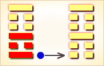
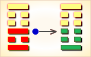
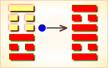
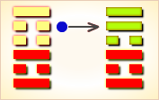
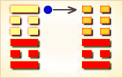

周易第22卦_贲卦(山火贲)_艮上离下
如有疑问互相交流，微信：470283584
周易第22卦详解
贲卦原文
贲。亨。小利有攸往。
象曰：山下有火，贲。君子以明庶政，无敢折狱。
白话文解释
贲卦：通达。有所往则有小利。
《象辞》说：本卦上卦为艮为山，下卦为离为火，山下有火，火燎群山，这是贲卦的卦象。君子观此卦象，思及猛火燎山，玉石俱焚，草木皆尽，以此为戒，从而明察各项政事，不敢以威猛断狱。
《断易天机》解
贲卦艮上离下，为艮宫初世卦。贲为装饰之意，离为明，艮为止，表示有文明的制度使人们止于一定的规范，因此多为吉兆。
北宋易学家邵雍解
文饰光明，外实内需；隐忧之时，量力而为。
得此卦者，表面风光，内在空虚，多虚少实。宜充实自己，稳重行事，量力而为。
台湾国学大儒傅佩荣解
时运：上有阻力，不可任意。
财运：经理精明，须防套牢。
家宅：小心火灾。
身体：郁火上升，慎用寒剂。
传统解卦
这个卦是异卦（下离上艮）相叠。离为火为明；艮为山为止。文明而有节制。贲卦论述文与质的关系，以质为主，以文调节。贲，文饰、修饰。
大象：日落西山，照耀通明，华美灿烂，同时喻光明力量渐消，阴暗的力量扩大。
运势：表面风光，内里空虚，必须充实自己，凡事宜踏实、按部就班。
事业：顺利，小有成绩，宜即时总结经验，图谋更大的发展。树立信心，不计较一时的得失。追求实质性的内容，慎重行事，不要随波逐流，寻求有实力的人物提携自己。
经商：开始会遇到困难，不应灰心，宜全面分析形势，大胆开拓，勇敢地投入，联合他人，共同合作，根据市场，运转业务。
求名：不可过多地注重外表，而应着重于内在的素质。大胆地推荐自己，但应坚持自己的理想。
婚恋：慎重选择，有合适者，则应迫切追求，不可三心二意，务必专一。注重对方的内在气质，勿为表面现象所欺骗。
决策：喜爱注重外表，缺乏追求内在气质的恒心。生性较为浮躁，好务虚名，往往因此而碰壁，或半途而废。在事实的教育下，改变不切实际的做法，明察社会和人生，会有所收敛，变得自持，注重自身修养，成全事业，中年以后会大有作为，老年仍可发挥余热。
台湾张铭仁解卦
贲：表示美丽得外表装饰，主小凶象。「金玉其外、败絮其中」，经过有心修饰、伪装的外表或事情，事业投资、感情皆不宜。慎防有心的小人、伪君子。
解释：表面好看，里表不一。
特性：重精神，轻物质，有艺术文学专才，感情敏锐，追求理想。在情爱上，易留下刻骨的回忆。
运势：卦象是象征其人外表好看，内在空虚，因此，必须充实自己，凡事深思远虑，与人和睦相处，能获得意外利益。切忌因小失大，更无须为了掩饰外观而造成不必要的损失。凡事踏实，按部就班为是。
家运：外美内虚而不为外人所知，应及时整顿家庭经济，使其安稳、充实，更须安份自持，莫以虚浮来掩饰空虚。踏实为上策。
疾病：病情危重，为心脏、胸腹等病。
胎孕：孕有不安之象。
子女：子女身体虚弱，美丽而得人缘。
周转：不宜大，小调尚可。
买卖：有贵人，速决有利。
等人：会来。但远方者不来。
寻人：已在东北或南方亲友家，可寻。
失物：在家中遗失，将可寻回。不妨试试注意门脚的地方。
外出：慎远行。但只要准备充分，注意安全，不会出麻烦。
考试：不理想。但人家以为你读得不错。
诉讼：宜速求解决，不可拖延，可得贵人调解。
求事：条件勿太苛求，可成。
改行：改行宜，但勿夸大或太过。
开业：开业者吉利之象。
周易第22卦初九爻详解
初九爻辞
初九。贲其趾，舍车而徒。
象曰：舍车而徒，义弗乘也。
白话文解释
初九：脚穿花鞋，舍车不乘，徒步而行。
《象辞》说：舍车不乘，徒步而行，为显示鞋子之美丽，理应不乘车。
北宋易学家邵雍解
平：得此爻者，多奔波，静凶动吉。做官的须防退职之患。
台湾国学大儒傅佩荣解
时运：个性清高，德优于名。
财运：脚踏实地，虽小亦亨。
家宅：勤俭起家，知足不辱。
身体：初起之病，自可痊愈。
初九变卦

初九爻动变得周易第52卦：艮为山。这个卦是同卦（下艮上艮）相叠。艮为山，二山相重，喻静止。它和震卦相反。高潮过后，必然出现低潮，进入事物的相对静止阶段。静止如山，宜止则止，宜行则行。行止即动和静，都不可失机，应恰到好处，动静得宜，适可而止。
周易第22卦六二爻详解
六二爻辞
六二。贲其须。
象曰：贲其须，与上兴也。
白话文解释
六二：修饰自己的胡须。
《象辞》说：修饰自己的胡须，说明老人不服老，帮助君王振兴国家。
北宋易学家邵雍解
平：得此爻者，得人提拔，好运可期，但也要相时而动，不可随性而为，以免遭难。做官的会因人成事，升迁有望。
台湾国学大儒傅佩荣解
时运：平平淡淡，依人成事。
财运：配合富商，必可获利。
家宅：祖上福泽；婚嫁宜待。
身体：遵照医嘱。
六二变卦

六二爻动变得周易第26卦：山天大畜。这个卦是异卦（下乾上艮）相叠。乾为天，刚健；艮为山，笃实。畜者积聚，大畜意为大积蓄。为此不畏严重的艰难险阻，努力修身养性以丰富德业。
周易第22卦九三爻详解
九三爻辞
九三。贲如，濡如，永贞吉。
象曰：永贞之吉，终莫之陵也。
白话文解释
九三：奔跑向前，汗流浃背。卜问长时期的凶吉而得吉兆。
《象辞》说：永远贞正，必吉利，因为决没有人侵凌正人君子。
北宋易学家邵雍解
吉：得此爻者，好运来到，不必费力，自然荣盛，即使有是非纠纷，也不足为患。做官的与人和睦，能居要职。
台湾国学大儒傅佩荣解
时运：名利双收，光华润泽。
财运：财源如水，可保基业。
家宅：可以久居；百年偕老。
身体：游泳健身。
九三变卦

九三爻动变得周易第27卦：山雷颐。这个卦是异卦（下震上艮）相叠。震为雷，艮为山。山在上而雷在下，外实内虚。春暖万物养育，依时养贤育民。阳实阴虚，实者养人，虚者为人养。自食其力。
周易第22卦六四爻详解
六四爻辞
六四。贲如，皤如，白马翰如，匪寇婚媾。
象曰：六四当位疑也。匪寇婚媾，终无尤也。
白话文解释
六四：奔跑气吁吁，太阳火辣辣。高头白马，向前飞奔。不是来抢劫，而是来娶亲。
《象辞》说：六四阴爻居阴位，所处恰当。既知不是来抢劫，而是来娶亲，疑虑冰释，终无灾祸。
北宋易学家邵雍解
平：得此爻者，先凶后吉，忧中有喜，虽有危险，终得安宁。未婚者，有望成家。做官的先难后易。
台湾国学大儒傅佩荣解
时运：安分则吉，明年亨通。
财运：早些售出，获利了结。
家宅：先有丧事，后有婚事。
身体：胸中气阻，调节上下。
六四变卦

六四爻动变得周易第30卦：离为火。这个卦是同卦（下离上离）相叠。离者丽也，附着之意，一阴附丽，上下二阳，该卦象征火，内空外明。离为火、为明，太阳反复升落，运行不息，柔顺为心。
周易第22卦六五爻详解
六五爻辞
六五。贲于丘园，束帛戋戋。吝，终吉。
象曰：六五之吉，有喜也。
白话文解释
六五：奔向丘园，送上许多布帛，初遇困难，终则顺利。
《象辞》说：六五爻辞说的吉利，是指有婚姻之喜。
北宋易学家邵雍解
吉：得此爻者，会遇贵人，经营获利，多喜事。做官的闲职者会受到重用，在职者福禄双全。
台湾国学大儒傅佩荣解
时运：虽为正运，勤俭为宜。
财运：木材丝绸，皆可获利。
家宅：家风勤俭；贤妇可喜。
身体：园林修养。
六五变卦

六五爻动变得周易第37卦：风火家人。这个卦是异卦（下离上巽）相叠。离为火；巽为风。火使热气上升，成为风。一切事物皆应以内在为本，然后伸延到外。发生于内，形成于外。喻先治家而后治天下，家道正，天下安乐。
周易第22卦上九爻详解
上九爻辞
上九。白贲，无咎。
象曰：白贲无咎，上得志也。
白话文解释
上九：送上白底饰以诸色花纹的布帛，不会坏事。
《象辞》说：白底的布帛饰以诸色花纹，没有灾祸，因为上九居一卦之首位，像人高高在上，志得意满。
北宋易学家邵雍解
平：得此爻者，须防好运转凶，家中、亲属有长辈或命终。做官的会升迁。
台湾国学大儒傅佩荣解
时运：好运已终，恬谈自适。
财运：直接出售，依然有利。
家宅：清白高尚。
身体：清谈解热，可能归天。
上九变卦

上九爻动变得周易第36卦：地火明夷。这个卦是异卦（下离上坤）相叠。离为明，坤为顺；离为日；坤为地。日没入地，光明受损，前途不明，环境困难，宜遵时养晦，坚守正道，外愚内慧，韬光养晦。